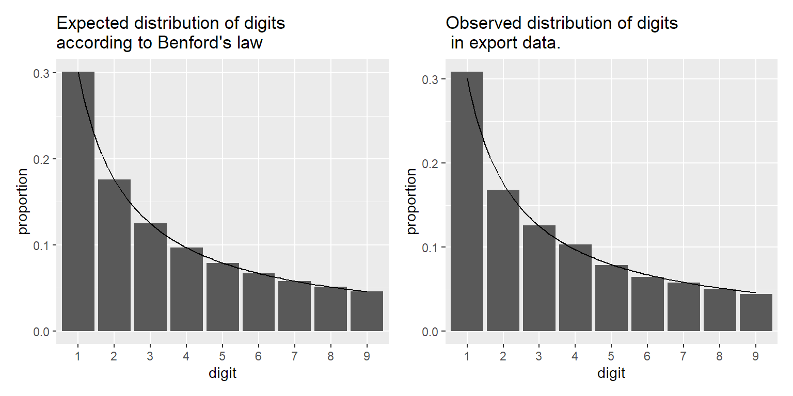
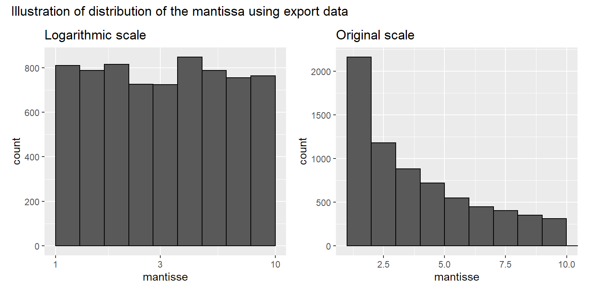
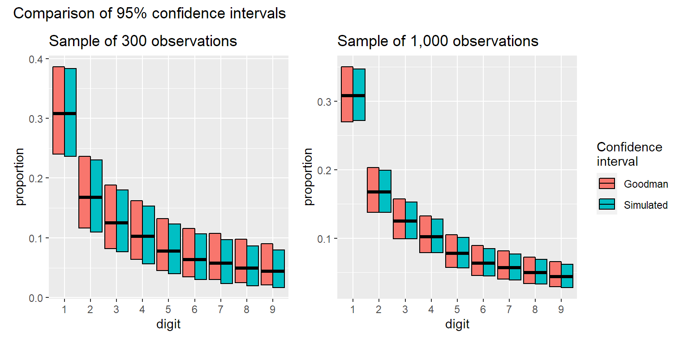

The astronomer Simon Newcomb noticed in 1881 that the first pages of a book with logarithmic values were worn out more than later pages. He saw this as an indication that any random number had a higher chance of starting with a 1 than with a higher digit. His calculations led to the conclusion that for any digit \(D\), the probability \(P(D)\) that any random number would start with that digit is given by:
\[ P(D) = \text{log}_{10}\left( \frac{D + 1}{D}\right) \]
In 1938, Frank Benford noticed the same thing and checked this theoretical distribution against a wide variety of datasets. Many of those datasets seemed to follow this law rather well, although some deviated significantly.
As an example, I’ve downloaded the export data of all countries for the period 1960 to 2020 from the Worldbank website. This dataset contains in total 7015 numbers. In the graphs below I show the expected distribution of the first digit according to Benford’s law (left), and the observed distribution in this dataset (right). Both graphs look almost identical.

| 1 | 2 | 3 | 4 | 5 | 6 | 7 | 8 | 9 |
Expected | 0.301 | 0.176 | 0.125 | 0.097 | 0.079 | 0.067 | 0.058 | 0.051 | 0.046 |
Observed | 0.309 | 0.168 | 0.126 | 0.103 | 0.078 | 0.064 | 0.058 | 0.050 | 0.044 |
Fast forward to 1992. A South-African PhD student, Mark J. Nigrini, finished his dissertation on using Benford’s law to detect tax evasion. Although Benford’s law was proposed before to detect fraud, it was the work of Nigrini that likely led to the popularisation of the concept. More importantly, it provided some guidelines to decide when deviation from the expected distribution was large enough to raise suspicion.
Actually, it’s surprising that we can find so many examples that largely follow Benford’s law, because it makes a very strong assumption. It expects that the logarithm of all numbers is equally likely to occur within a given order of magnitude.
To illustrate this, we’ll use scientific notation. For example, the number \(324\) can be written as \(3.24 \times 10^2\). We call \(3.24\) the mantissa and \(2\) the exponent. Benford’s law implies that the logarithm of the mantissa is uniformly distributed. This can be illustrated using the export dataset, as shown in the plot below.

This insight should help you decide when a dataset is not going to follow Benford’s law.
First of all, you expect a deviation when a dataset doesn’t span an entire order of magnitude. For example, length of humans can’t follow Benford’s law. The average length of a newborn baby is 50cm, so in the order of magnitude \(10^1\) to \(10^2\) cm, you exclude already a huge part of possible values. But more importantly, in the order of magnitude \(10^2\) to \(10^3\)cm, the only possible first digits are 1 and 2. Nobody is 3 meter or larger.
Second, you expect a deviation when a previous datapoint influences the value of the next one. For example, if you see 35,000 dollar on a personal saving account, the next value is likely going to be either a bit less or a bit more, but still in the range between 30,000 and 40,000. So also in this case the assumption won’t hold.
Lastly, you expect a deviation simply due to randomness if you have a small dataset. We explore this further in the next section.
As explained before, the amount of expected variation is largely dependent upon the amount of data. With smaller datasets you expect larger amounts of variation. But how much would one expect? One way to look at it, is to calculate between which boundaries the proportions will lie in 95% of the cases.
According to Lesperance et al(2016), you can calculate these boundaries rather well using the method of Goodman. In the plot below, I compare these calculated confidence intervals with confidence intervals simulated based on a random sample from the export data. Both approaches are in rather good agreement, making Goodman a good alternative to computation-heavy simulations.
